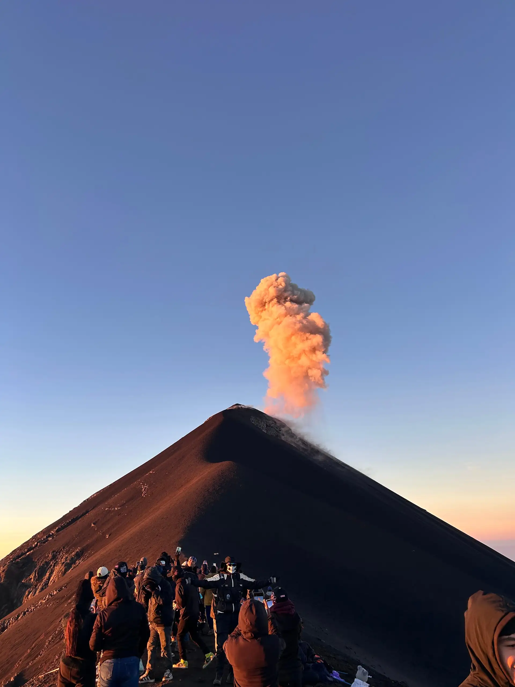

הר געש אקטננגו – גואטמלה
|
ההתפרצויות התכופות הופכות את פואגו (Fuego) בגואטמלה, שגובהו 3,946 מטרים, לאחד מהרי הגעש הפעילים ביותר במרכז אמריקה. הרפתקנים המעוניינים לחזות מקרוב בפלא פירוקלסטי זה מטפסים אל הר הגעש השכן אקטננגו (Acatenango), המספק נקודת תצפית שאין שנייה לה. הטיול המאומץ עובר במטעי קפה שופעים וביערות עננים, ומסתיים בפסגה מעוררת יראה. הטיולים מתחילים בדרך כלל בכפר לה סולדד (La Soledad), ממנו יוצא השביל המוביל לאקטננגו. ישנה עלייה מאתגרת אך מתגמלת, העוברת דרך מערכות אקולוגיות שונות – מאדמות חקלאיות ועד יערות מחטניים. הטיפוס לפסגה יכול להימשך בין חמש לשש שעות, תלוי בקצב ההליכה ובתנאי מזג האוויר. יש אפשרות לרכב על סוסים בחלק הראשון של המסע, אך את הקטע האחרון המוביל לפסגה יש לעשות ברגל. טרקים לאקטננגו אינם מיועדים לבעלי לב חלש. הרפתקה זו דורשת כושר גופני, הכנה מוקדמת ורוח הרפתקנות. בעונה היבשה, הנמשכת מנובמבר עד אפריל, הראות טובה יותר והר הגעש נוטה להיות פעיל בהרבה. |
 |